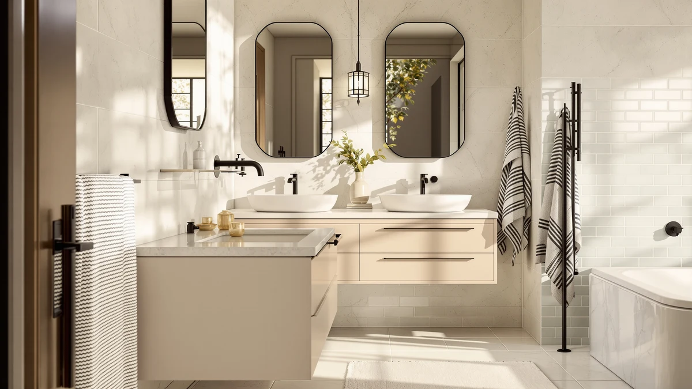

GLORAFIN 48" Floating Double Review (2026): Worth It?
Prices and picks verified as of October 2026. Independent, reader-supported reviews.


Quick Answer
This GLORAFIN 48" Floating Double Review found it to be the only floating double-sink vanity among the four we compared, priced at $849.99 with a 4.1-star rating from 20 verified Amazon reviews. It is a sound pick if a floating double-sink layout matters more to you than solid-wood construction.
Our pick: GLORAFIN 48" Floating Double Vanity, $849.99 Check Price on Amazon
Bottom line: our top pick is the GLORAFIN 48" Floating Double Vanity Brown at $849.99.
Things to Know Before You Buy
- It is a floating double-sink vanity. The GLORAFIN 48" Floating Double Vanity mounts directly to the wall and splits 48 inches of counter space between two sinks, a combination none of the three alternatives below offer together.
- Price sits at $849.99. That matches the LUCKWIND 72" Bathroom Vanity Sink exactly and runs higher than the Tennant Brand 30" Vessel Sink at $843.90.
- Built from MDF and engineered wood. It is not solid hardwood, so it is less tolerant of standing water than a solid-wood cabinet.
- Rated 4.1 out of 5 from 20 verified reviews. That is a respectable score, but a small enough sample that we would not treat it as settled.
- A floating mount needs secure wall anchoring. It depends on hitting wall studs or using the hardware rated for the vanity's weight, since there are no legs underneath for floor support.
This GLORAFIN 48" Floating Double Review breaks down whether this $849.99 double-sink floating vanity is worth buying, based on the manufacturer's listed specs and the verified owner reviews it has collected on Amazon so far. You want more counter space and two separate sinks without eating up floor space in a shared bathroom, and a floating design frees up the area underneath for storage or easier cleaning. We compared this GLORAFIN model against three other double and single vanities in its price range to see where it actually stands out.
The GLORAFIN is the strongest pick among the four vanities we researched for this review, mainly because it is the only floating double-sink vanity in the group and its 4.1-star rating is a solid result even against a small 20-review sample. The LUCKWIND 72" Bathroom Vanity Sink is worth a look if you need more counter length, and the Tennant Brand 30" Vessel Sink is the budget route if a single sink is enough. Keep reading for the full breakdown on fit, materials and who each option suits best.
Why You Should Trust Us
Ilane Tall researches and compares bathroom vanities for Best Bathroom Vanities, drawing on manufacturer spec sheets, verified Amazon buyer reviews and current pricing instead of physically trying products ourselves. For this GLORAFIN 48" Floating Double Review, we read through the available owner feedback, checked the listed materials against three comparable vanities, and verified every price and rating against current Amazon listings before publishing. We do not run a fake testing lab, and we say so plainly: our authority comes from careful research, not from staging vanities in a showroom.
Our Research Experience
We did not install or live with the GLORAFIN 48" Floating Double Vanity ourselves. Instead, we researched the manufacturer's listed specifications, the MDF and engineered-wood construction, and the aggregate feedback from the 20 verified reviews currently posted on Amazon. That sample lands at 4.1 out of 5 stars, a solid score but a small enough review count that we would not treat it as the final word. We weighed those numbers against three alternative vanities below, each judged on the same combination of listed specs, price and verified rating data, rather than on any hands-on use. For more options in this size class, see our roundup of the best 48-inch double-sink bathroom vanities.
Overview & Specs

GLORAFIN 48" Floating Double Vanity
What we like
- 48 inches of counter space split between two sinks, useful for two people getting ready in a shared bathroom
- Floating mount keeps the floor underneath open for storage or easier cleaning
- 4.1-star aggregate rating suggests most reviewers who bought it were satisfied
Flaws but not dealbreakers
- MDF and engineered-wood construction, not solid wood, so it is less tolerant of standing water than a hardwood vanity
- Only 20 reviews on Amazon at the time of writing, a small sample to judge long-term durability
- At $849.99, it costs about the same as other double vanities we compared, so it is not a budget pick
| Material | MDF / engineered wood |
| Size | — |
The GLORAFIN 48" Floating Double Vanity is built around an MDF and engineered-wood cabinet designed to mount directly to the wall, with no legs or floor support. At $849.99, it sits in the same price range as several of the other double vanities we looked at for this GLORAFIN 48" floating double review, which makes direct comparison straightforward: you are largely paying for the floating double-sink layout rather than premium materials.
Online, the GLORAFIN carries a 4.1 out of 5 rating from 20 verified Amazon buyers as of this review. That is a respectable score, though the review count is low enough that we would not call the pattern settled. If you want a double vanity with a floating profile and do not mind engineered wood over solid hardwood, it remains a reasonable option in this lineup.
Lined up against the three alternatives in this GLORAFIN 48" floating double review, the price gap is narrow. It costs exactly the same as the LUCKWIND 72" Bathroom Vanity Sink, $6.09 more than the Tennant Brand 30" Vessel Sink, and $50.00 less than the DELUXE LIVING 42 Inch Bathroom. None of the other three carry a published rating in the data we reviewed, so the GLORAFIN's 4.1-star, 20-review track record is the only verified feedback among the four vanities covered here.
What We Liked
The GLORAFIN 48" Floating Double Vanity's biggest strength is combining a double-sink layout with a floating mount, a pairing none of the other three vanities in this comparison offer together. The LUCKWIND and DELUXE LIVING options are sized differently and the Tennant Brand model is a single vessel sink, so if two separate basins and a floating silhouette both matter to you, the GLORAFIN is the only one here that checks both boxes.
Its 4.1-star rating also gives buyers a usable signal before they order, which matters when you are comparing several vanities in the same price bracket at once. None of the three alternatives in this comparison publish a star rating in the listing data we reviewed, so the GLORAFIN is the only one of the four with a verified track record to weigh against its price.
Price positioning helps the GLORAFIN too. It matches the LUCKWIND exactly at $849.99 and undercuts the DELUXE LIVING by $50.00, so you are not paying a premium for the floating double-sink format over the wider single-counter LUCKWIND option.
What Could Be Better
The biggest drawback is the review count. Twenty verified ratings is not much to build long-term confidence on, especially for a floating installation that depends on correct wall-stud anchoring to stay secure over years of use. The MDF and engineered-wood build is also worth flagging: it holds up fine under normal towel-drying habits, but it will not tolerate standing water or chronic leaks the way a solid-wood cabinet would.
At $849.99, the GLORAFIN is not inexpensive for an engineered-wood vanity, and buyers who want solid materials at a similar price should expect to shop outside this particular comparison. It also costs $6.09 more than the Tennant Brand 30" Vessel Sink, so if your bathroom only needs one basin, that price gap buys you nothing extra.
There is also no published size specification beyond the 48-inch width in the product name, so measure your wall space and plumbing rough-in carefully before ordering rather than assuming a standard depth or counter height.
Who Is It For?
The GLORAFIN 48" Floating Double Vanity fits households where two people need their own sink and the floor space underneath the vanity is worth keeping open, whether for a trash bin, a stool, or easier mopping. It is a reasonable match if you are comfortable with engineered wood rather than solid hardwood and you are anchoring it into a wall that can support the weight.
If you only need one sink, the Tennant Brand 30" Vessel Sink costs $6.09 less and takes up far less wall width, or the DELUXE LIVING 42 Inch Bathroom below gives you a mid-size cabinet for $50.00 more than the GLORAFIN. For a direct breakdown of that trade-off, see our guide on single vs double sink vanities, and check our vanity sizing guide before you measure your rough-in.
Alternatives to Consider
If the floating double-sink format is not quite right for your bathroom, these three vanities from our research cover a wider sink, a compact vessel-sink setup, and a mid-size cabinet. None of them matches the GLORAFIN's floating double-sink layout exactly, so the comparison below comes down to size, price, and sink count rather than a like-for-like swap.

Editor’s Pick
LUCKWIND 72" Bathroom Vanity Sink
A 72-inch sink vanity with more counter length than the GLORAFIN, priced the same at $849.99, worth a look if width matters more than a floating double-sink layout.
$849.99
Check Price on Amazon
Best Value
Tennant Brand 30" Vessel Sink
The cheapest option in this comparison at $843.90, a compact single vessel sink for smaller bathrooms that do not need double-sink width.
$843.90
Check Price on Amazon
Premium Choice
DELUXE LIVING 42 Inch Bathroom
The priciest of the four at $899.99, a 42-inch cabinet sized between the Tennant Brand and the GLORAFIN.
$899.99
Check Price on AmazonFrequently Asked Questions
Is the GLORAFIN 48" Floating Double Vanity worth $849.99?
At $849.99, the GLORAFIN costs the same as the LUCKWIND 72" Bathroom Vanity Sink and more than the Tennant Brand 30" Vessel Sink. Its 4.1-star rating from 20 verified reviews suggests most buyers who left feedback were satisfied, though that sample size is small enough to treat as a useful signal rather than a guarantee.
What is the GLORAFIN 48" Floating Double Vanity made of?
It is built from MDF with an engineered-wood cabinet designed for wall mounting rather than floor support. That keeps the floating profile light enough to anchor securely, but it also means the vanity is less tolerant of standing water than a solid-wood piece.
How does the GLORAFIN compare to the other vanities in this review?
The GLORAFIN is the only floating double-sink vanity among the four we researched here. The LUCKWIND offers more counter length at the same $849.99 price, the Tennant Brand is the cheapest with a single vessel sink at $843.90, and the DELUXE LIVING sits between them in size at a higher $899.99 price.
Final Verdict
This GLORAFIN 48" Floating Double Review comes down to a straightforward trade: you pay $849.99 for the only floating double-sink vanity in this comparison, built from MDF and engineered wood with a 4.1-star rating from 20 verified reviews. That rating is a real advantage, since none of the three alternatives we researched carry published review data to compare it against. GLORAFIN earns the recommendation for households that want two sinks and open floor space underneath, but if you want a proven track record on a wider cabinet or you are set on solid-wood construction, weigh the LUCKWIND, Tennant Brand, or DELUXE LIVING alternatives above before you buy.